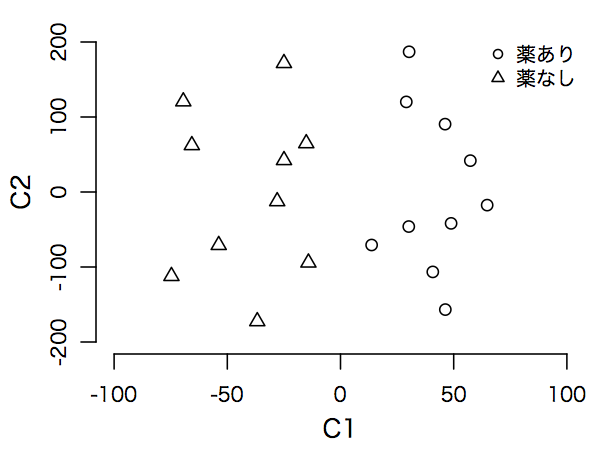

#math78##tex2html_wrap_inline1805#�
mathend000#の固有ベクトルを用いて、もとのデータを#tex2html_wrap_inline1807#�
mathend000#個の正準変量に変換することができる。
これらを#math79##tex2html_wrap_inline1809#�
mathend000#とすると、#tex2html_wrap_inline1811#�
mathend000#は群内平方和が1、群内積和が0となるように基準化されており、かつ群間平方和が最大値#tex2html_wrap_inline1813#�
mathend000#を取る。
また、#tex2html_wrap_inline1815#�
mathend000#は#tex2html_wrap_inline1817#�
mathend000#と無相関かつ群内平方和が1、群内積和が0で、群間平方和が最大値#tex2html_wrap_inline1819#�
mathend000#を取る。
以下同様。
群間差を視覚的に把握するため、特性数が3以上、群の数が2以上の場合、正準変量を2次元平面上にプロットすることがある。
これを<#395#>正準判別分析<#395#>という。
Rでは、MANOVAによる分析を行うための関数 manova() が装備されている。
図#figdataliverweight#398>のデータ dataliverweight.csv で肝臓量と体重の平均が薬の有無に関わらず等しいという帰無仮説をMANOVAによって検定するには、以下のスクリプトを実行すればよい。
verbatim12#
この例は2群比較であるので、#tex2html_wrap_inline1821#�
mathend000#より4つの統計量いずれにもとづいても同じ結果が得られる。
上記の例ではMANOVAで群間差が有意であったので、次に特性ごとのANOVAを行うことになる。
この場合、関数 summary.aov() に manova() の結果を渡せばよい。
verbatim13#
この場合、MANOVAでは有意差が得られていたものが、体重と肝臓量それぞれについて検討すると、有意差なしという結果になる。
上記の例で、平方和積和行列#math80##tex2html_wrap_inline1823#�
mathend000#と#math81##tex2html_wrap_inline1825#�
mathend000#の固有値は以下の通り。
verbatim14#
後藤 (1973, p.212) を参照して正準変量を算出すると、以下の通り。
verbatim15#
図#figcanonicalplotdataliverweight#422>は薬剤の有無別に正準変量をプロットしたものである
後藤 (1973, p.212) では各変数から全体平均を引いたものに固有ベクトルをかけることで正準変量を求めている。
一方、「SASによる実験データの解析」図表 14.3（p.275）ではこれとメトリックが異なっているし、そもそもSASのアウトプットでは固有ベクトル（に何かを演算したもの）を用いて正準変量を算出している（図表14.2, p.272）。
この点については詳しく説明されていないのでよくわからない。
<#1826#>図<#1826#> 5.3:
<#1827#>群別正準変量プロット<#1827#>

|